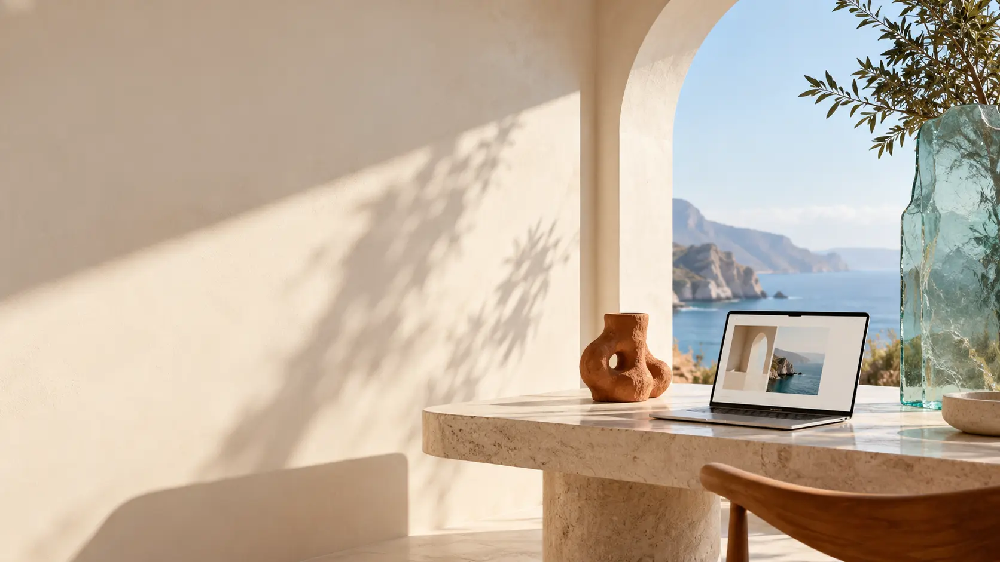

A FICTIONAL DESIGN STUDIO / CONCEPT 002Spaces
Spaces
worth feeling.
An editorial studio website prototype built around calm composition, visual storytelling and thoughtful interactions.
DESIGN IS IN THE DETAILS / 001
Beauty in the
way we live.
Canvas is an invented creative studio used to explore layouts and interactions for an image-led portfolio. No actual commissions or finished interiors are represented.
02 / VISUAL EXPLORATIONS
Selected studies.

Studio Notes
03 / OBJECT STUDY
Form & Function
Open Horizon
4 concept studies shown.
Not a real studio.
A real frontend demo.
Responsive layout, category filtering and visual storytelling built with plain HTML, CSS and JavaScript.
View case study ↗